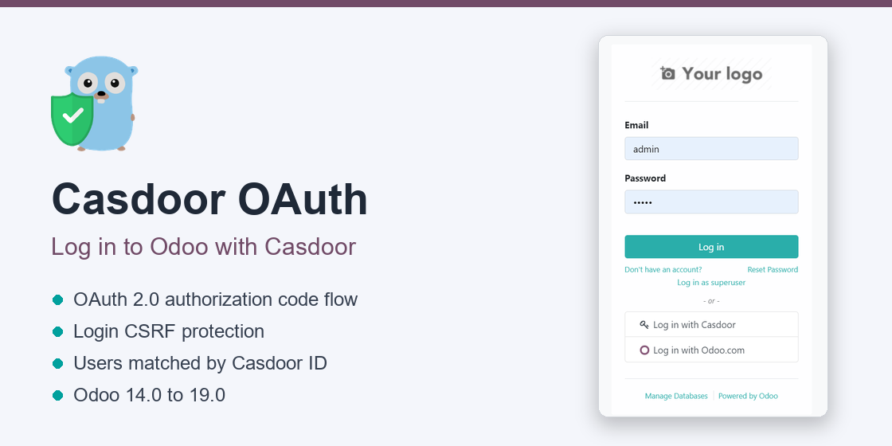
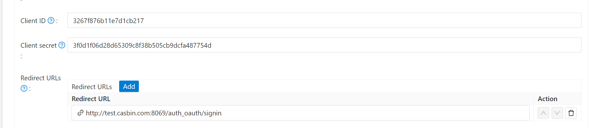
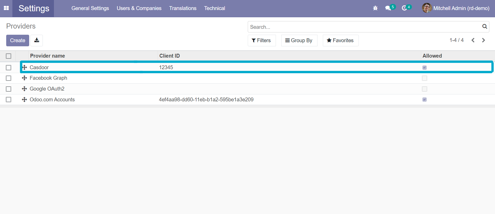
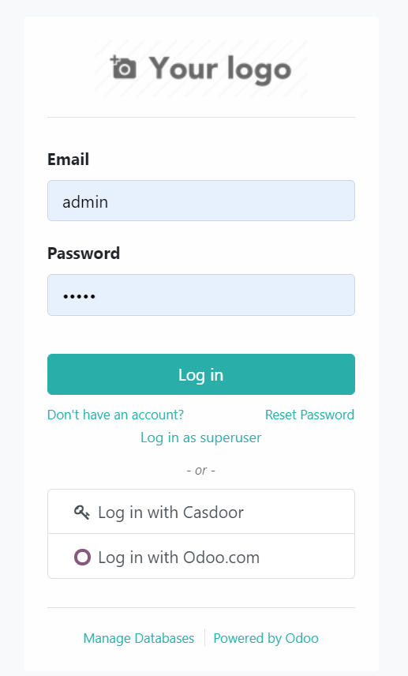

Casdoor is an open-source identity and access management (IAM) / single sign-on (SSO) platform. This module adds a Log in with Casdoor button to the Odoo login page, so your users can sign in to Odoo with the same account they use for your other applications.

auth_oauth module: users are created and matched the same way as with Odoo's built-in OAuth providers.state carries a random nonce bound to the browser's Odoo session, so a sign-in cannot be started in one browser and finished in another (no login CSRF)./api/userinfo endpoint; tokens issued to other Casdoor applications are rejected.sub), not by name or email.
In Casdoor, open your application and add your Odoo URL followed by /auth_oauth/signin to Redirect URLs,
e.g. https://odoo.example.com/auth_oauth/signin. Note its Client ID and Client secret.

As an administrator, open Settings > Users & Companies > Casdoor and fill in:
| Client ID | Client ID of the Casdoor application |
|---|---|
| Client Secret | Client secret of the Casdoor application |
| Casdoor URL | URL of your Casdoor server, e.g. https://door.casdoor.com. The authorization and user info URLs are filled in from it |
| Allowed | Check it to show the button on the login page |
| Scope | openid profile email (the default), so that Odoo gets the user's name and email |
The same fields are on every provider under Settings > Users & Companies > OAuth Providers (developer mode): any provider with a Casdoor URL is handled as a Casdoor provider.

To let Casdoor users without an Odoo account sign in, enable Settings > General Settings > Permissions > Customer Account: Free sign up; new users are created as portal users with their Casdoor email as login. Otherwise only users that already exist in Odoo, or that you invite, can sign in with Casdoor.
Sign out and click Log in with Casdoor on the login page.

Source code and issues: github.com/casdoor/odoo-casdoor-oauth
Casdoor documentation: casdoor.ai/docs